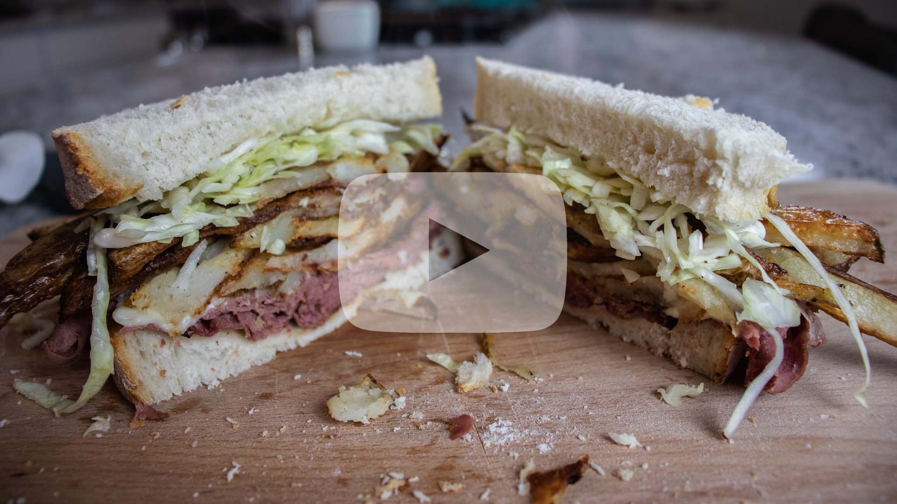

Primanti Brothers Sandwich
Fries
- - 3 - 4 russet potatoes
- - Salt and pepper (to preference)
- - Avocado oil (to coat fries/for baking sheet)
Coleslaw
- - 1 head of green cabbage
- - 3 tablespoons of white vinegar
- - 1 1/2 tablespoons of olive oil
- - 1 teaspoon of sugar
- - Salt and pepper (to preference)
Rest of Sandwich
- - Italian bread - sliced thick
- - Provolone cheese
- - Roast beef deli meat
- - Sliced tomatoes
Directions:
French Fries
- 1. Cut russet potatoes into fry shaped pieces.
- 2. Place fries into bowl, soak in hot water for 30 minutes.
- 3. Preheat oven to 475 degrees.
- 4. After 30 minutes, drain from water, and place fries on a clean, lint-free towel to get off any remaining water.
- 5. Toss fries with avocado oil (if you don't have avocado oil, you can use another oil of your choice), salt, and pepper.
- 6. Add oil to the bottom of your baking sheet as well, to prevent sticking.
- 7. Cover baking sheet with aluminum foil, bake for 5 - 6 minutes.
- 8. After 5-6 minutes of baking, remove aluminum foil and place back into the oven for another 20 minutes.
- 9. After 20 minutes, flip the fries and place back into the oven for another 15 - 20 minutes.
- 10. Remove fries from baking sheet and place onto a plate or tray lined with paper towel.
Coleslaw
- 1. Chop up head of green cabbage into thin pieces.
- 2. Place cabbage into a mixing bowl.
- 3. Wisk together vinegar, oil, and sugar until sugar.
- 4. Add vinegar/oil/sugar mixture to the cabbage and toss until evenly covering the cabbage.
- 5. Salt and pepper to taste, toss cabbage again.
- 6. Cover mixing bowl with plastic wrap and place in your refrigerator for at least an hour to allow flavors to merge together.
Sandwich
- 1. Slice bread into thick slices.
- 2. On your cooking surface, add your meat. Allow meat to heat up, tossing periodically.
- 3. Once meat is hot, apply slices of provolone cheese. Allow cheese to melt.
- 4. Once all ingredients are made, it's time to assemble. Take one slice of bread and add your meat with the melted cheese. On top of the meat, add a heaping pile of fries, and on top of that, your cabbage then a couple slices of tomatoes. Squish the sandwich down and enjoy.